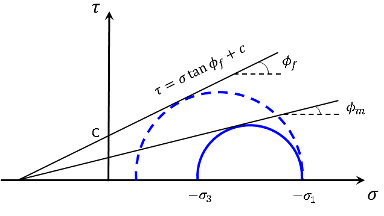
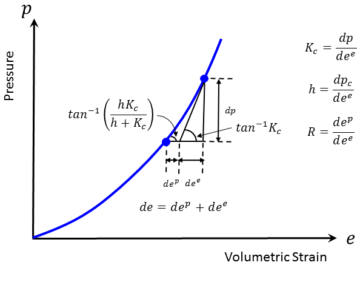
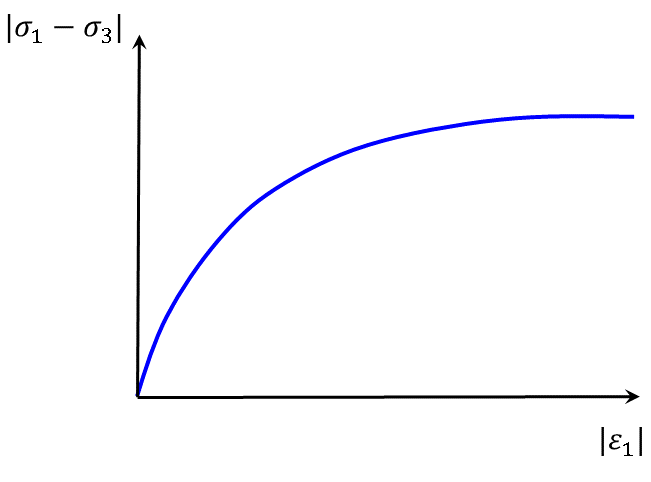
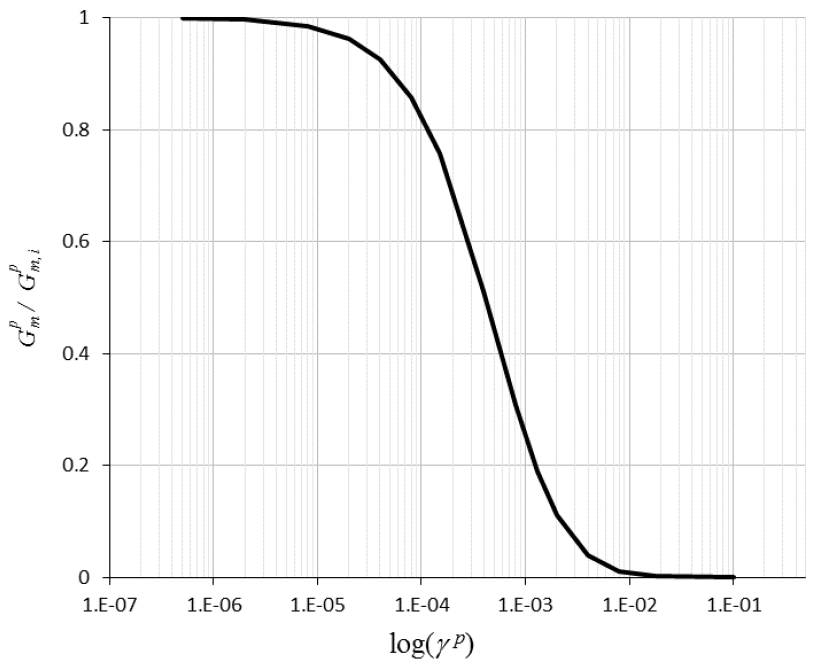
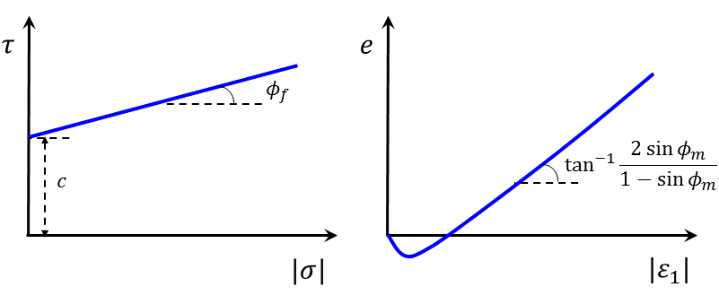

帽盖屈服（CYSoil）模型*
注意
*本模型仅在 FLAC3D 中提供。
CYSoil 模型是一种应变硬化本构模型，具有包含摩擦和黏聚作用的 Mohr-Coulomb 剪切包络线，以及椭圆形体积帽盖；帽盖的轴比由形状参数 \(\alpha\) 定义。FLAC3D 6 中的 CYSoil 模型是 FLAC3D 5 版本的更新，具有以下内置功能：
- 用于捕捉等向压实试验中所观察到的体积幂律性状的帽盖硬化法则；
- 用于再现排水三轴试验中观察到的双曲线应力-应变性状的摩擦硬化法则；以及
- 用于模拟土体剪切引起的不可恢复体积应变的压实/剪胀法则。
在平均应力轴上用帽盖封闭屈服面的动机，是允许在等向应力增加时发生塑性行为。该塑性效应反映颗粒破碎与重排，是土体所特有的。在 双屈服模型（double-yield model） 中，帽盖是应力空间中垂直于平均应力轴的平面。一些用户认为，该形状对单轴压缩试验中模型所预测的侧向土压力系数 \(K_0\) 的影响偏于受限。就这一点而言，CYSoil 模型是对双屈服模型的改进，通过在 (\(p^{\prime}\), \(q\)) 平面中采用椭圆帽盖来应对该问题。椭圆的轴比 \(\alpha\) 决定 \(K_0\) 的取值，是模型的材料性质，可选择以匹配单轴压缩下的已知值。特别地，取 \(\alpha \gg 1\) 时，平面体积帽盖即作为 CYSoil 公式的特例得到。
此外，在受偏应力加载时土体通常表现出刚度下降并伴随不可恢复变形。多数情况下，排水三轴试验所得的偏应力-轴向应变曲线可用双曲线近似。Duncan 与 Chang（1970）利用这一特征建立了著名的“双曲线土体”模型。Duncan 与 Chang 的双曲线土体模型是非线性弹性模型，已被证明存在一些缺点，例如难以识别与刻画卸载/再加载，以及在特定情形下产生非物理的体积模量值、导致模型中能量生成错误。由于 CYSoil 模型基于硬化塑性理论表述，它能够以另一种方式（基于摩擦硬化）表达双曲线行为，从而可解决其中部分问题。CYSoil 模型的简化版本称为 CHSoil 模型（CHSoil model），也解决了 Duncan 与 Chang 模型的困难，可作为其替代方案。
在排水三轴条件下试验时，土体通常表现出强烈依赖于密度的剪切诱发体积变化。一般而言，除非土体极松，土体在小剪应变下有收缩趋势，在较大应变下有剪胀趋势（Byrne 等 2003）。特别地，当孔隙中充满流体时，正是土骨架这种收缩与剪胀的趋势控制其液化响应。此外，松散土在排水条件下的剪应力/剪应变响应可能表现出软化。正是在单调荷载控制过程中出现抗剪强度峰值，才可能导致失稳（静态液化）（Boukpeti 2001）。CYSoil 模型可通过剪胀硬化/软化法则计入剪切诱发的体积变化。
公式
本节中，主应力 \(\sigma_i\) 和主应变 \(e_i\) 的分量 i = 1,3 在受拉时取正。此外，除非明确说明，所有应力默认均为有效应力。主有效应力按 \(\sigma_1 \le \sigma_2 \le \sigma_3\) 排列，其中 \(\sigma_1\) 为压缩程度最大的应力。
增量弹性定律
弹性行为采用胡克定律表示。用主应力和主应变表示的增量形式为
其中，\(\alpha_1 = K^e + 4G^e / 3\)、\(\alpha_2 = K^e - 2G^e / 3\)，以及 \(K^e\) 和 \(G^e\) 分别为当前切线弹性体积模量和剪切模量。
在本构模型逻辑中，模量 \(G^e\) 与平均有效压力按幂律关联。用户给出泊松比 \(\nu\) 的值，并假定其保持不变。此外用户可给出 \(G^e\) 的上下限值，从而覆盖这些参数的默认设置。注意 \(G^e\) 的上限用于数值稳定性：应把模拟过程中达到的最大值附近的值赋给该参数；若赋予大得多的值，数值收敛可能变慢。
体积模量 \(K^e\) 在内部按以下关系导出：
屈服函数与势函数
剪切屈服准则与流动法则
剪切屈服由 Mohr-Coulomb 准则定义（表示见 图 1（Figure 1））：
其中 \(N_m = (1 + \sin \phi_m) / (1 - \sin \phi_m)\)，\(\phi_m\) 为发挥摩擦，该量可在初始值（可能为零）与用户设定的最终值 \(\phi_f\) 之间增大。


图 1：原位应力与破坏时的 Mohr 圆。
注意在模型逻辑中卸载为弹性，因此 \(\phi_m\) 不能减小。公式 (3) 的最后一项包含发挥黏聚力 \(c_m\)，它可在初始值与用户定义的最终值 \(c\) 之间增大。\(c_m\) 的表达式为：
剪切屈服包络（见公式 (3)）也可写成如下替代形式（与帽盖公式一致）：
其中 \(M = 6 \sin \phi_m / (3 - \sin \phi_m)\)，\(p\) 为平均有效应力，\(p\) = -(\(\sigma_1\) + \(\sigma_2\) + \(\sigma_3\))/3，\(q\) 为剪应力的度量，定义为 \(q = - [\sigma_1 + (\delta - 1)\sigma_2 - \delta \sigma_3]\)，其中 \(\delta = (3+\sin \phi_m) / (3-\sin \phi_m)\)。
势函数为非关联形式，表示为
其中，\(q^* = -[\sigma_1 + (\delta^* - 1)\sigma_2 - \delta^* \sigma_3]\)、\(\delta^* = (3+\sin \psi_m) / (3-\sin \psi_m)\)、\(M^* = 6 \sin \psi_m / (3 - \sin \psi_m)\)，且 \(\psi_m\) 为动员剪胀角。
体积帽盖准则与流动法则
帽盖上的屈服与以下判据相关：
其中，\(\alpha\) 为无量纲参数，定义（\(p\)，\(q\)）平面内椭圆帽盖的形状；\(p_c\) 为当前帽盖压力。请注意，\(\alpha = 1\) 时椭球面退化为球形帽盖，这是默认设置；\(\alpha \gg 1\) 时则退化为平面体积帽盖。
拉伸屈服准则与流动法则
拉伸屈服函数与 Mohr-Coulomb 模型（Mohr-Coulomb model） 所用相同：
其中，\(\sigma^t\) 为抗拉强度。拉伸屈服采用关联势函数。
内建硬化函数
帽盖硬化
土体刚度通常随等向压力非线性增大。在 CYSoil 模型中，等向压实试验中的土体体积性状由以下幂律描述：
其中 \(e\) 为体积应变（压缩为正），\(K_{ref}\) 为切线弹性体积模量数，乘积 \(K_{ref}p_{ref}\) 为参考有效压力 \(p_{ref}\) 下 \(p\) 对 \(e\) 室内曲线的斜率，\(e\) 为常数（\(0 < m < 1\)）。
该法则的典型曲线（含一小段卸载）示意于 图 2（Figure 2）。曲线方程为（对公式 (9) 积分并在 \(e = 0\) 处取 \(p = 0\) 得到）：
采用通常的假定：总应变增量等于弹性贡献与塑性贡献之和：
此处的 \(e^p\) 仅为帽盖屈服产生的塑性体积应变贡献，不含剪切屈服。


图 2：各向同性固结试验：压力与体积应变的关系。
此外，切线弹性模量 \(K^e\) 和塑性模量 \(H\) 定义如下：
随着材料变得更密实，其塑性刚度通常增大；由于颗粒被压得更近，弹性刚度也随之增大看来是合理的。CYSoil 模型采用一条简单规则：一般加载条件下当前弹性模量等于常数 \(R\) 乘以当前塑性模量：
对等向压缩，\(dp = dp_c\)，并按 \(K^e\) 与 \(H\) 的定义（见公式 (12) 与 (13)），由公式 (14) 可得
因此，把 \(dp_c / de\) 的定义（公式 (9)）代入公式 (18)，切线弹性体积模量 \(K^e\) 依以下幂律取决于帽盖压力 \(p_c\)（即材料过去所承受的最大有效压力）：
按公式 (9) 与 (18)，切线弹性剪切模量服从以下幂律：
其中
输入参数 \(G_{ref}\)、\(p_{ref}\)、\(m\) 与 \(R\) 必须由用户提供。
此外，用户还可以给出 \(G^e\) 的上下限 \(G^e_{max}\) 和 \(G^e_{min}\)，以覆盖这些参数的默认设置。请注意，\(G^e\) 的上限用于保证数值稳定性，应赋予接近模拟过程中所达到最大值的数值。如果所赋数值大得多，数值收敛可能较慢。
把公式 (19) 代入公式 (14) 后，硬化模量 \(H\) 的表达式变为
对于 m < 1，假定 \(e^p\) = 0 时 \(p_c\) = 0，对式 (22) 积分，可得到帽盖压力 \(p_c\) 随塑性体积应变 \(e^p\) 变化的演化规律：
反过来，塑性体积应变可用 \(p_c\) 表示为：
请注意，程序将 \(m\) 的上限设为 0.99。不过，在 \(m\) = 1 的极限情况下，对 m < 1，假定 \(e^p\) = 0 时 \(p_c\) = 0，式 (22) 会给出一种对数规律，与Cam-Clay 模型（Cam-Clay model）采用的表达式类似：
摩擦硬化
对多数土体，排水三轴试验所得的偏应力-轴向应变曲线可用双曲线近似（图 3（Figure 3））。CYSoil 模型采用摩擦-应变硬化法则来刻画该行为。


图 3：一般三轴试验的偏应力对轴向应变。
在 CYSoil 模型中，帽盖体积屈服包络线的演化参数与剪切屈服包络线的演化参数彼此独立。按约定，动员塑性剪切模量 \(G^p_m\) 定义为：
其中 \(\phi_m\) 为发挥摩擦角，\(\gamma^p\) 为塑性剪应变。因此比值 \(G^p_m/p_{ref}\) 即发挥应力比 \(\sin \phi_m\) 对塑性剪应变 \(\gamma^p\) 关系曲线的斜率。发挥塑性剪切模量的表达式取自 Byrne 等（2003）：
式中，\(\phi_0\) 为内部常数，默认设为用户给定的原位动员摩擦角；\(\phi_f\) 为极限摩擦角；\(G^p_{m,i}\) 为原位条件下的 \(G^p_m\)；\(R_f\) 为破坏比，用于给定 \(G^p_m\) 的下限。请注意，\(R_f\) < 1，许多情况下采用的典型值为 \(R_f\) = 0.9。
对于 CYSoil 模型，\(G^p_{m,i}\) 表示为
其中，\(beta\) 为用户自定义的标定系数，可以取决于围压：在三轴试验模拟中为试验围压，在现场尺度模拟中为原位围压。
将式 (27) 和 (28) 代入式 (26)，并整理若干项，得到：
考虑在 \(\phi_m = \phi_0\) 时 \(\gamma^p\) = 0，对式 (27) 积分，可以得到 CYSoil 模型中动员摩擦角 \(\phi_m\) 随塑性剪应变 \(\gamma^p\) 变化的演化规律：
内建逻辑用公式 (30) 由累积塑性剪应变计算发挥摩擦。
注意在 \(\phi_0 = 0\) 条件下由公式 (30) 解出 \(\gamma^p\) 后可得：
把公式 (31) 中的 \(\sin \phi_m\) 代入公式 (27) 并经一些变换，可用塑性剪应变表示发挥塑性剪切模量：
其中
\({G^p_m}/{G^p_{m,i}}\) 对 \(\log \gamma^p\) 的关系图以通用形式表示于 图 4（Figure 4）。


图 4：\({G^p_m}/{G^p_{m,i}}\) 与 \(\log \gamma^p\) 关系图的一般形式。
假定极小应变下的曲线，见图 4（Figure 4），由原位条件确定，例如利用跨孔或下孔试验获得的剪切波速剖面；同时，\(\gamma^p\) 为建立初始状态后产生的塑性剪应变。在这种情况下，演化参数 \(\gamma^p\) 的初始值应保留为零，即默认值。程序会自动将参数 \(\phi_0\) 设为用户提供的初始动员摩擦角 friction mob。这意味着，模拟过程中将从 \(\gamma^p\) = 0 开始使用图 4（Figure 4） 中的曲线。
或者，用户可在模拟中从大于零的 \(\gamma^p\) 值开始使用模量退化曲线。该选项提供额外的标定灵活性。注意当用户给出 \(\gamma^p\) 的非零初值时，程序自动把内部常数 \(\phi_0\) 设为零。例如可用公式 (31) 导出与用户所给发挥摩擦角一致的塑性剪应变值，作为输入提供给程序。
剪胀硬化
土体剪切预计会引起一定量的不可恢复体积应变 \(e^p\)。在较小的单调或循环剪应变下，颗粒重排使土骨架倾向于收缩；剪应变较大时，如果土体密实，颗粒相互爬升则可能使土骨架剪胀。模型采用剪胀应变硬化表来模拟这种非单调行为。对于 CYSoil 模型，剪切硬化流动法则的形式为
其中 \(\psi_m\) 为发挥剪胀角。发挥剪胀角 ψm 的演化法则基于 Rowe 应力-剪胀理论（1962），由以下法则给出：
其中，式 (30) 将 \(\sin \phi_m\) 表示为 \(\gamma^p\) 的函数，\(\sin \phi_{cv}\) 为常数。根据式 (35) 的规律，在 \(\sin \phi_m < \sin \phi_{cv}\) 条件下材料收缩，在 \(\sin \phi_m > \sin \phi_{cv}\) 条件下材料剪胀。多数情况下，等体积应力比 \(\sin \phi_{cv}\) 可用已知的极限摩擦角 \(\sin \phi_f\) 和极限剪胀角 \(\sin \psi_f\) 表示为：
其中，\(\phi_f\) 和 \(\psi_f\) 分别为已知的极限摩擦角与极限剪胀角。
剪胀截断
此外，还可以指定剪胀截断：当孔隙比 \(\hat{e}\) 超过指定值 \(\hat{e}_{max}\) 时，将动员剪胀角设为零。用户需提供初始原位孔隙比 \(\hat{e}_{ini}\) 和最终孔隙比 \(\hat{e}_{max}\)。程序根据已知体积应变 \(e\)，伸长取正，初始原位体积应变 \(e_{ini}\)，通常为零，以及初始孔隙比 \(\hat{e}_{ini}\)，按下式计算当前孔隙比 \(\hat{e}\)：
使 \(\psi_m\) = 0（若 \(\hat{e} \ge \hat{e}_{max}\)）。
材料参数的选择
默认情况下，基本 CYSoil 模型包含下述特性与功能：
- 摩擦与黏聚应变硬化的 Mohr-Coulomb 剪切包络，并附带：1) 内建摩擦硬化法则，以再现排水三轴试验中观察到的双曲线应力-应变性状；2) 内建剪胀硬化/软化法则，以模拟剪切引起的体积变化，即土体在小剪应变下收缩、在大应变下剪胀。
- 带有椭圆体积帽盖、其轴比由形状参数定义（可选择以匹配单轴压缩下已知的侧向土压力值），并结合内建帽盖硬化法则，以捕捉等向压实试验中观察到的体积幂律性状。
下面给出为基本模型选取性质的一般准则。
初始化 \(G_{ref}\)、\(R\) 和 \(m\)
“硬化曲线”以及弹性体积模量与塑性体积模量之比 \(R\) 是可从等向压缩试验结果导出的体积性质。包含一小段卸载的试验室曲线示于 图 2（Figure 2）。参数 \(R\) 可由图中卸载段量测的两个量 \(de^p\) 与 \(de^e\) 之比估算（见公式 (17)）。公式 (10) 中出现的另外两个体积模型参数 \(G_{ref}\) 与 \(m\) 可通过将该式拟合试验室曲线得到（见 图 2（Figure 2） 示意）。为便于拟合，可先用 \(m\) = 0.5 的初值以及图上卸载点附近量测的 \(dp\) 与 \(de\)，由公式 (9) 计算 \(G_{ref}\) 的初步估计值。随后可进行若干次迭代，调整 \(G_{ref}\) 与 \(m\) 以更好地拟合试验室曲线。反过来，参数 \(G_{ref}\) 可由公式 (21)（依据已知的 \(K_{ref}\) 与 \(\nu\)）估算。
另一种方法是，根据 FLAC3D 中塑性硬化（PH）模型（plastic-hardening (PH) model）已发表的参数 \(E^{ref}_{ur}\) 和 \(E^{ref}_{oed}\)，采用以下关系估计模型参数 \(G_{ref}\) 和 \(R\)。也可以使用其他等效模型的参数，例如 Plaxis 中的 Hardening Soil 模型。
在 \(p_c = p_{ref}\) 处，公式 (20) 给出：
另一方面，按定义：
于是可得
由固结仪条件下 \(E^{ref}_{oed}\) 的定义可推得以下关系。
其中使用了式 (21) 中 \(K_{ref}\) 与 \(G_{ref}\) 之间的关系。
使用 \(E^{ref}_{ur}\)，乘子 \(R\) 可求得为
公式 (43) 至 (44) 可用作把塑性硬化模型参数与 CYSoil 模型性质联系起来的近似。但请注意这两个模型的表述不同，因此不能指望用二者得到的模拟结果完全相同。
初始化 \(c\)、\(\phi_f\)、\(\psi_f\) 与 \(\sigma^t\)
这些属性与Mohr-Coulomb 模型（Mohr-Coulomb model）中的属性相同。极限摩擦角、黏聚力和剪胀角可通过至少两个不同围压下、持续到极限屈服状态的标准三轴试验确定，见图 5（Figure 5）。抗拉强度可以通过加载至试样破坏的拉伸试验确定。对于常见土类，也可以从文献中查找相应属性。


图 5：剪应力对法向应力（左）与体积应变对轴向应变（右）。
帽盖压力的初始化
帽盖压力应初始化为与原位应力一致的值，并视情况考虑土体的体积超固结。初始帽盖压力由屈服准则 \(f^c\) = 0 导出（见公式 (7)）：
其中，超固结比 \(OCR\) 是大于或等于 1 的放大系数。
程序会自动赋予演化参数 \(e^p\) 的初值，该值由公式 (24) 导出，并与初始帽盖压力一致。
发挥摩擦角的初始化
发挥摩擦角是重要参数，应适当初始化以与原位应力一致，并视情况考虑剪切超固结。以下表达式与公式 (3) 一致，可用于确定正常剪切固结材料的发挥摩擦角：
其中，\(\sigma_1\) 和 \(\sigma_3\) 分别为原位最小和最大主有效应力，\(c\) 为黏聚力。式 (46) 来自图 1（Figure 1）所示 Mohr 圆的几何关系。通过将动员摩擦角属性的初始值设为大于正常固结对应值 \(\phi^{nc}_m\)，可指定超固结土的初始状态。
摩擦硬化参数的初始化
默认情况下假定原位条件下摩擦硬化参数 \(\gamma^p\) 为零。或者，用户可选择从大于零的 \(\gamma^p\) 值开始使用模量退化曲线（见 摩擦硬化（friction hardening） 的讨论）。可用以下表达式初始化塑性剪应变值，使其与发挥摩擦的初值一致（见公式 (31)）：
可选功能
用户自定义硬化/软化规律
该模型的一个灵活特性是可用用户定义的硬化/软化法则替代内建法则，并以表格形式传递给模型。最多可声明五个表格。表格可依据塑性剪应变度量 \(\gamma^p\) 指定发挥摩擦、剪胀与黏聚力；依据拉伸塑性应变 \(e^{pt}\) 指定抗拉强度；依据帽盖塑性体积应变 \(e^p\) 指定体积帽盖压力。当为某个模型性质（例如摩擦、剪胀、黏聚力、抗拉强度或帽盖压力）声明表格时，相应的用户定义法则优先于对应内建法则。
Duncan-Chang 型模型
对无需考虑显著塑性体积应变的岩土工程应用，体积帽盖通常被忽略。另一方面，考虑材料弹性模量对初始有效应力的依赖性仍然很重要。这类问题常用 Duncan 与 Chang 双曲线土体模型（1970）分析。
要在 CYSoil 模型中考虑这类行为，应将 flag-cap 设为 0，即默认值，指定不使用体积帽盖。此外，应将 \(p_{ini}\) 赋为按网格单元定义的初始围压正值度量，例如 \(p_{ini} = \sigma_3\)。随后，程序在计算体积模量和剪切模量的式 (19) 和 (20) 中，用 \(p_{ini}\) 替代 \(p_c\)。
当剪胀固定为零并使用 flag-cap = 1 时，该模型表现出的行为应类似于 Duncan–Chang 模型，特别是类似于CHSoil 模型（CHSoil model）。
常数摩擦角
除了 CYSoil 模型内置的摩擦硬化逻辑，也可以采用恒定摩擦角。要选择此选项，需将 flag-shear 设为 1，默认值为 0，并将 friction 属性设为所需的摩擦角。
剪胀的其他选项
当 flag-dilation = 0（默认值）时使用内建剪胀逻辑。另有两种备选：1) 常剪胀（flag-dilation = 1），此时使用剪胀性质的输入值；2) Rowe 剪胀法则（flag-dilation = 2），此时 \(\phi_{cv}\) 不再由 \(\phi_f\) 与 \(\psi_f\) 在内部导出，而是用 friction-critical 设定的输入值。
实现步骤
CYSoil 模型的实现流程遵循 双屈服模型（double-yield model） 的一般实现。每个时步用当前模型性质值计算新应力。过程中先由旧应力分量加上对该步总应变增量应用虎克定律所得的增量，得到弹性试探 \(\sigma_{ij}^I\)。计算并排序主应力 \(\sigma_1^I, \sigma_2^I, \sigma_3^I\) 及相应主方向。若这些应力违反剪切、体积（帽盖）和/或拉伸的屈服准则，则对弹性试探施加修正以得到新应力状态。随后假定主方向未受塑性修正影响，由主值计算参考轴系中的应力张量分量。
剪切、帽盖与拉伸屈服的演化参数 \(\gamma^p\)、\(e^p\) 与 \(e^{pt}\) 由程序分别独立计算。剪切屈服的参数为（累积）塑性剪应变 \(\gamma^p\)；塑性剪应变增量定义为
其中，\(\Delta e_m^{ps} = \bigl(\Delta e^{ps}_1 + \Delta e^{ps}_3)/3\)，\(\Delta e_j^{ps}, j\) = 1,3 为主塑性剪应变增量。
帽盖屈服的演化参数为塑性体积应变的大小 \(e^p\)，其增量定义为
其中 \(\Delta e_j^{p}, j\) = 1,3 为帽盖屈服产生的主塑性应变增量。
拉伸硬化参数 \(e^{pt}\) 用于度量累计塑性拉应变，其增量定义为
其中，\(\Delta e_3^{pt}\) 为最大主应力方向的塑性拉应变增量；请注意，拉应力取正。
各破坏模式的塑性应变增量分量由与 双屈服模型（double-yield model） 推导相似的表达式计算。随后由网格单元中所有三角形相应的（面平均）塑性应变增量计算网格单元硬化增量。之后计算并存储新的网格单元性质（例如发挥摩擦、黏聚力、剪胀、更新的帽盖压力），供下一步使用。
硬化或软化滞后于相应的塑性变形一个时步。在显式程序中由于步长很小，该误差很小。下面给出若干简单试验以演示 CYSoil 模型的特性与能力。
参考文献
Boukpeti, N. 《颗粒沉积物中的静态液化模拟》。博士论文，University of Minnesota（2001）。
Byrne, P. M., S. S. Park and M. Beaty.《地震液化：离心机模拟与数值模拟》，载 《FLAC 与岩土工程数值模拟——2003（第 3 届国际 FLAC 研讨会论文集，加拿大安大略省萨德伯里，2003 年 10 月）》，第 321-331 页。R. Brummer 等编。Lisse: A. A. Balkema（2003）。
Duncan, J. M., and C. Y. Chang.《土中应力与应变的非线性分析》，Soil Mechanics，96（SM5），1629-1653（1970）。
Rowe, P. W.《接触颗粒集合体静态平衡的应力-剪胀关系》，Proc. Roy. Soc. A.，269，500-527（1962）。
cap-yield 模型性质
使用以下关键字，配合 设置网格单元属性（zone property） 命令，设置帽盖屈服（CYSoil）模型的这些属性。
- cap-yield
-
- friction-mobilized f
动员摩擦角，\(\phi_m\)；应通过命令或 FISH 函数初始化，且不小于由 \(\phi^{nc}_m\) 确定的值，见此式（this equation）。
- pressure-cap f
帽盖压力 \(p_c\)，可通过命令或 FISH 函数初始化。
- pressure-initial f
初始平均有效应力 \(p_{ini}\)。若未指定 pressure-cap 则必需。可通过命令或 FISH 函数初始化。
- pressure-reference f
参考压力，\(p_{ref}\)。应根据模型采用的应力或压力单位，指定一个非零值。
- shear-reference f
无量纲弹性剪切模量参考值 \(G_{ref}\)。应指定非零值。
- flag-brittle b (a)
若为真，则在发生拉伸破坏时把拉伸极限设为 0。默认为 false。
- flag-cap i (a)
= 0（默认）：不使用帽盖。弹性模量是平均有效应力的函数，应指定 pressure_initial。
= 1：使用帽盖。弹性模量是帽盖压力的函数，应通过命令或 FISH 函数指定 pressure_cap，否则由程序内部计算，详见 pressure_cap 的说明。
- flag-dilation i (a)
= 0（默认）：采用内置 Rowe 剪胀规律（built-in Rowe dilation rule）。
= 1, \(\psi_m\) ≡ \(\psi_f\).
= 2 时，应指定 \(\phi_{cv}\)，而 \(\psi_m\) 由 本公式（this equation） 计算。
- friction-0 f (a)
与零塑性剪应变对应的初始发挥摩擦角 \(\phi_0\)。默认情况下若 \(\epsilon_{ps}\) 初始化为 0.0，则 \(\phi_0\) = \(\phi_m\)；否则若未指定则 \(\phi_0\) = 0.0。
- friction-critical f (a)
常数 \(\phi_{cv}\)。默认值由 本公式（this equation） 计算。仅在 flag-dilation = 2 时需要指定。
- shear-maximum f (a)
弹性剪切模量的最大值（上限），\(G^e_{max}\)。内部计算的默认值为 \(10 \times G^e_{ini}\)，其中 \(G^e_{ini}\) 为模型首次建立时的初始 \(G^e\)。
- shear-minimum f (a)
弹性剪切模量的最小值（下限），\(G^e_{min}\)。内部计算的默认值为 \(0.1 \times G^e_{ini}\)，其中 \(G^e_{ini}\) 为模型首次建立时的初始 \(G^e\)。
- strain-shear-plastic f (a)
累积塑性剪应变 \(\gamma^p\)。默认情况下在内部初始化。
- strain-volumetric-plastic f (a)
累计塑性体积应变，\(e^p\)。默认在程序内部初始化。
- table-pressure-cap s (a)
把帽盖压力与塑性体积应变关联的表格名称。
- table-cohesion s (a)
把黏聚力与塑性剪应变关联的表格名称。
- table-dilation s (a)
用于关联动员剪胀角与塑性剪应变的表名。
- table-friction s (a)
用于关联动员摩擦角与塑性剪应变的表名。
- table-tension s (a)
把抗拉强度与塑性拉应变关联的表格名称。
- void-maximum f (a)
允许的最大孔隙比 \(\hat{e}_{max}\)。默认为 999.0，这是一个用以绕过 剪胀截断（dilatancy cut-off） 的虚拟值。
- bulk f (r)
当前弹性体积模量
- pressure-effective-cy f (r)
平均有效应力 \(p\)
- shear f (r)
当前弹性剪切模量
- stress-deviatoric-cy f (r)
偏应力，\(q\)
- void f (r)
当前孔隙比 \(\hat{e}\)
- young f (r)
当前弹性杨氏模量，\(E\)
图例
- (a) 高级属性。
- 该属性具有默认值；在较简单的模型应用中，无需专门赋值。
- (r) 只读属性。
- 该属性不能由用户设置，但可以列出、绘图显示，或通过 FISH 访问。
注意事项
- 抗拉截断为 \({\sigma}^t = min({\sigma}^t, c/\tan \phi)\)。
- 必须在 \(p_c\) 与 \(p_{ini}\) 之间指定一个参数。
- 与孔隙相关的参数 \(\hat{e}_{ini}\) 与 \(\hat{e}_{max}\) 仅用于 剪胀截止（dilatancy cut-off）。若不考虑剪胀截止，则这些参数无需输入（使用默认值）。
- 拉伸表与 flag-brittle 不应同时处于活动状态。
| 这些内容对您有帮助吗？… 版权与免责声明 |
FLAC3D © 2019, Itasca | 原文更新于 2020 年 10 月 8 日 |